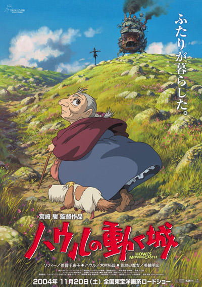
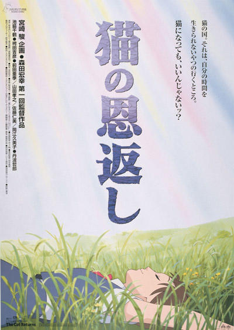
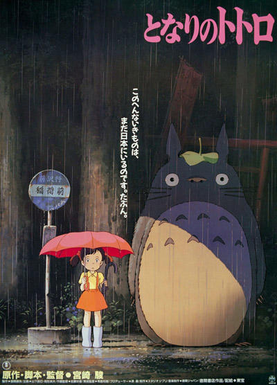
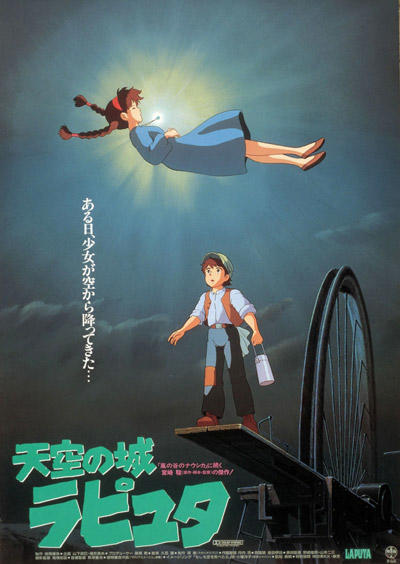

스튜디오 지브리의 대표 작품
(영화이름 Click!)
마루 밑 아리에티 (The Borrowers, 2010)

| 제목 | 마루 밑 아리에티 ( The Borrowers, 2010 ) |
|---|---|
| 평점 | ★★★★☆ 8.11 |
| 감독 | 요네바야시 히로마사 |
| 개요 | 애니메이션, 판타지 |
| 개봉일 | 2010. 09. 09. |
| 상영시간 | 94 분 |
| 등급 | 전체 관람가 |
| 줄거리 | 소인족과 인간은 다르지만 그들은 전부 자신만의 방식으로 열심히 살아가고 있다는 메시지를 담고 있는 애니메이션이다. |
벼랑 위의 포뇨 (Ponyo On the Cliff, 2008)

| 제목 | 벼랑 위의 포뇨 ( Ponyo On the Cliff, 2008 ) |
|---|---|
| 평점 | ★★★★☆ 8.19 |
| 감독 | 미야자키 하야오 |
| 개요 | 모험, 가족, 애니메이션 |
| 개봉일 | 2008. 12. 17. |
| 상영시간 | 100 분 |
| 등급 | 전체 관람가 |
| 줄거리 | 바닷가 마을을 배경으로, 인간이 되고 싶어하는 소원을 가진 꼬마 물고기 포뇨와 5살박이 소년 소스케와의 만남을 주제로 하는 애니메이션이다. |
하울의 움직이는 성 (Howl's Moving Castle, 2004)

| 제목 | 하울의 움직이는 성 ( Howl's Moving Castle, 2004 ) |
|---|---|
| 평점 | ★★★★★ 9.34 |
| 감독 | 미야자키 하야오 |
| 개요 | 애니메이션, 판타지 |
| 개봉일 | 2004. 12. 23. |
| 상영시간 | 119 분 |
| 등급 | 전체 관람가 |
| 줄거리 | 19세기 말, 마법과 과학이 공존하고 있는 유럽의 앵거리 마을을 무대로 삼아, 마녀의 저주로 인해 90세 노인이 된 18세 소녀 소피를 통해 진정한 인생과 사랑의 의미를 전하는 애니메이션이다. |
고양이의 보은 (The Cat Returns, 2002)

| 제목 | 고양이의 보은 ( The Cat Returns, 2002 ) |
|---|---|
| 평점 | ★★★★☆ 8.62 |
| 감독 | 모리타 히로유키 |
| 개요 | 애니메이션, 모험, 판타지, 가족 |
| 개봉일 | 2003. 08. 08. |
| 상영시간 | 75 분 |
| 등급 | 전체 관람가 |
| 줄거리 | 어느 날 위기에 처한 고양이를 도와준 하루, 그 고양이는 고양이 왕국의 왕자님이었다. 이 사실을 안 왕은 하루를 왕자의 신부로 강제로 맞이하려 하지만, 이 위기를 벗어나기 위해 노력하는 하루의 고군분투를 그린 애니메이션이다. |
센과 치히로의 행방불명 (The Spriting Away Of Sen And Chihiro, 2001)

| 제목 | 센과 치히로의 행방불명 ( The Spiriting Away Of Sen And Chihiro, 2001 ) |
|---|---|
| 평점 | ★★★★★ 9.58 |
| 감독 | 미야자키 하야오 |
| 개요 | 애니메이션, 판타지, 모험, 가족 |
| 개봉일 | 2002. 06. 28. |
| 상영시간 | 126 분 |
| 등급 | 전체 관람가 |
| 줄거리 | 일본의 온갖 정령들이 모여드는 온천장을 배경으로 소녀 치히로의 모험기를 다룬 애니메이션이다. |
이웃집 토토로 (My Neighbor Totoro, 1988)

| 제목 | 이웃집 토토로 ( My Neighbor Totoro, 1988 ) |
|---|---|
| 평점 | ★★★★★ 9.23 |
| 감독 | 미야자키 하야오 |
| 개요 | 애니메이션, 가족, 판타지 |
| 개봉일 | 2001. 07. 28. |
| 상영시간 | 87 분 |
| 등급 | 전체 관람가 |
| 줄거리 | 시골 마을로 이사 온 자매와 신비로운 숲의 정령 토토로의 만남을 따뜻하고 아름답게 그린 애니메이션이다. |
천공의 성 라퓨타 (Laputa: Castle In the Sky, 1986)

| 제목 | 천공의 성 라퓨타 ( Laputa: Castle In the Sky, 1986 ) |
|---|---|
| 평점 | ★★★★★ 9.31 |
| 감독 | 미야자키 하야오 |
| 개요 | 애니메이션, 판타지, 모험 |
| 개봉일 | 2004. 04. 30 |
| 상영시간 | 124 분 |
| 등급 | 전체 관람가 |
| 줄거리 | 하늘을 날아다니는 성 라퓨타 제국과 그 성을 날아다닐 수 있게 하는 전설의 비행석을 둘러싼 모험을 그린 애니메이션이다. |